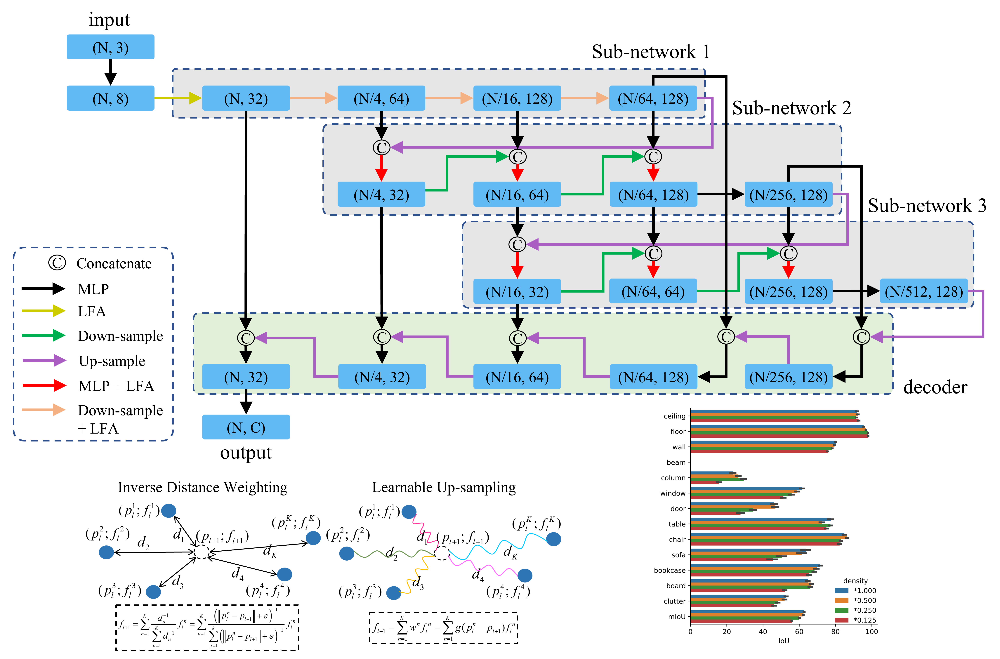
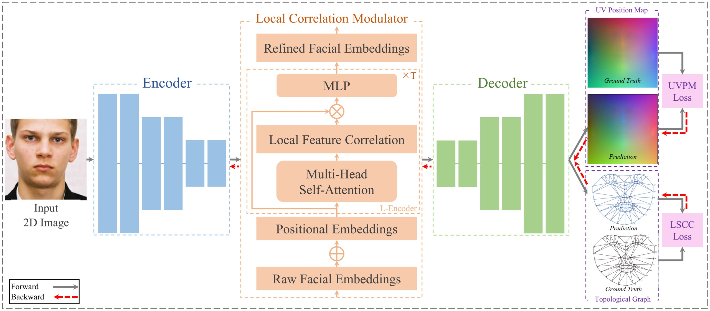
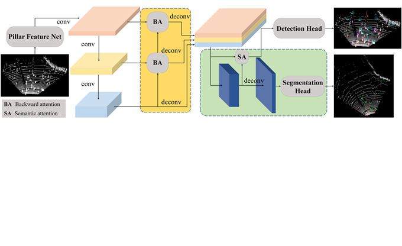
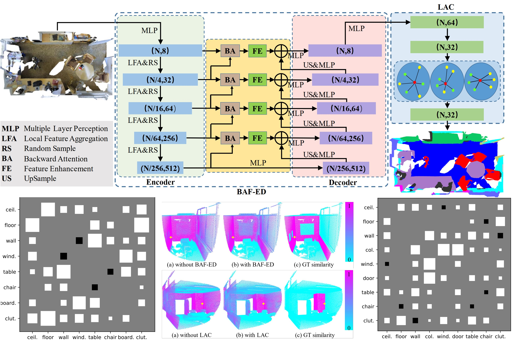
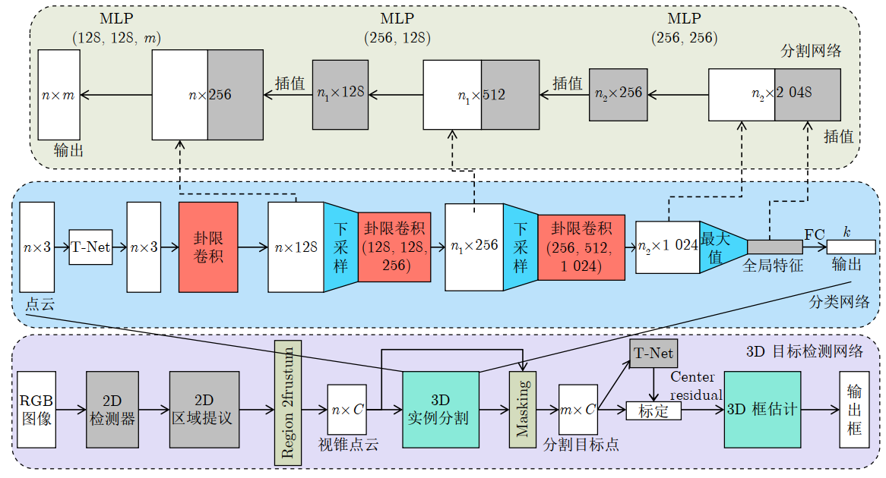

About me
I am an Algorithm engineer of Leapmotor Technology since July 2021. Previously I spent seven wonderful years and obtained my Master's Degree and Bachelor's Degree at Nanjing University of Information Science and Technology respectively, supervised by Qingshan Liu. My current research is mainly focus on general 3D perception, including segmentation and detection for point cloud. Here is my personal CV.
News
- [2022/07] Waterfall-Net, a new point cloud segmentation paradigm network with waterfall feature aggregation, is accepted by PRCV 2022.
- [2022/04] I have become a contributor of MMLab project.
- [2022/04] CED-Net, which introduces contextual information both in shape and feature level for 3D face reconstruction, is accepted by Multimedia Systems.
- [2021/12] SA-Net, a semantic-aware network for point cloud object detection, is accepted by ICOMV 2022.
- [2021/04] BAF-LAC, a novel segmentation paradigm network for point cloud, is accepted by TIP.
- [2020/07] Octant-CNN, a general network for point cloud task, is accepted by 自动化学报.
Education
- Nanjing University of Information Science and Technology (NUIST)
- September 2018 - June 2021
- M.S. in Control Science and Engineering
- Nanjing University of Information Science and Technology (NUIST)
- September 2014 - June 2018
- Major: B.E. in Electrical Engineering and Automation
Publications

- Waterfall-Net: Waterfall Feature Aggregation for Point Cloud Semantic Segmentation
- Hui Shuai, Xiang Xu, Qingshan Liu
- Chinese Conference on Pattern Recognition and Computer Vision, 2022
- [Paper] [Code]

- CED-Net: Contextual Encoder-Decoder Network for 3D Face Reconstruction
- Lei Zhu, Shanmin Wang, Zengqun Zhao, Xiang Xu, Qiangshan Liu
- Multimedia Systems, 2022
- [Paper]

- Semantic-Aware Object Detection for 3D Point Cloud
- Xiang Xu, Gang Huang, Laifeng Hu, Yaonong Wang
- International Conference on Optics and Machine Vision, 2022
- [paper]

- Backward Attentive Fusing Network with Local Aggregation Classifier for 3D Point Cloud Semantic Segmentation
- Hui Shuai, Xiang Xu, Qingshan Liu
- IEEE Transactions on Image Processing 2021
- [Paper] [Code]

- 基于卦限卷积神经网络的 3D 点云分析
- 许翔, 帅惠, 刘青山
- 自动化学报 2021
- [Paper] [Code]
Experience
- Leapmotor Technologies Co. Ltd.
- July 2021 - Now. Advisor: Laifeng Hu
- Focus: Lidar perception for autonomous driving.
Miscellaneous
Academic Services
I served as a reviewer for Acta Automatica Sinica (自动化学报).
I served as an active contributor of MMDetection3D.
Hobbies
Love: 🏀Basketball, 🎶music, 🏸badminton, and 🏓table tennis.